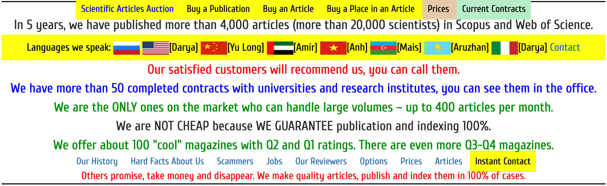
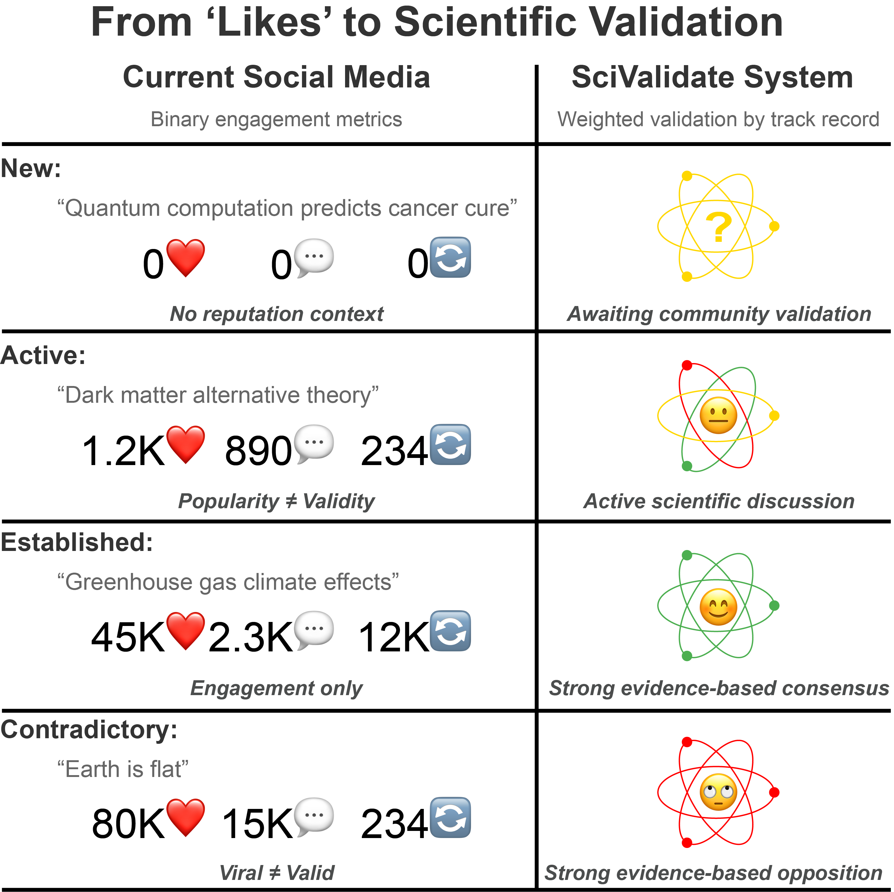

TL;DR: SciValidate seeks to be a trust verification system that helps readers evaluate scientific claims and strengthens the integrity of online scientific discourse. Please sign up here to help with this effort or follow its progress.
Many of you reached out with thoughtful feedback and critical questions after my recent posts on LinkedIn and Substack about modernizing scientific trust architecture. The core challenge remains: How can we maintain scientific rigor while enabling rapid, verified sharing across modern communication channels?
The Scale of the Challenge
Many investigations covering the past decade reveal just how urgent this problem has become. Indeed, retractions attributed to deliberate fraud for papers published in 2022 were over 50%, more than triple the average between 1988 (when I finished my PhD) and 2018 1 . We’re seeing an industrialization of fraudulent research, with some estimates suggesting hundreds of thousands of questionable papers are in circulation. This problem isn’t just about academic integrity—it directly impacts progress in climate change, medical research, drug development, and patient care. Fields like cancer research are particularly affected, with some subfields potentially seeing 50% or more papers coming from paper mills 2 .
These mills are even brazen enough to advertise on the web:

The industrialization of fraudulent research points to an even more troubling horizon: As AI systems train on scientific texts presumed to have been written by humans, fraudulent precedents that feed AI-generated papers threaten to create a catastrophic feedback loop that could compromise research integrity for generations. Addressing scientific integrity now is crucial—the foundation of Science itself is at risk.
That is why this effort has paused my primary time-sink of the past few months: writing a deep technical article about carbon accounting and how miscalculations affect potential solutions to climate change. I’m still working on it, but I’ve put it on the back burner.
While my previous calls for assistance generated thoughtful responses, the absence of eager and committed volunteers highlighted a crucial truth: meaningful change often begins with individual action before gathering momentum. Rather than attempting to solve this global challenge alone, I’m developing a focused proof-of-concept implementation, starting small with a representative academic department. This approach allows assumptions and core concepts to be tested while controlling for variables like institutional policies and existing trust relationships. Demonstrating concrete concepts at a micro-scale provides practical evidence for recruiting investors, programmers, scientists, and engineers—seeing is often believing.
Building a Network of Scientific Trust
The ultimate objective is for readers to evaluate the source of the information they consume and decide whether they should trust it. Scientific communication is particularly challenging, extending far beyond the laboratory or university, primarily because non-scientists interpret conclusions as “proof” and opinions expressed by individual scientists as “scientific fact.” The insular and highly specialized nature of scientific inquiry complicates this situation: While researchers and academics diligently generate crucial knowledge as part of the fabric of Science, they often lack the time, skill, or inclination for extensive public engagement.
Creating a new network of scientific trust might sound ambitious, but we’ve seen glimpses of such systems’ power before. When Eugene Garfield created the Science Citation Index in the 1950s 3 , he did more than map the scientific literature—he revealed the hidden fabric of scientific knowledge itself. This information network architecture proved so influential that it inspired Google’s PageRank algorithm 4 , where two Stanford computer nerds changed how we navigate the Internet.
Today’s social platforms force us into a false polar dichotomy of agreement or rejection. Albert Einstein disagreed with Niels Bohr’s interpretation of quantum mechanics but still respected his work. Charles Darwin and Alfred Russel Wallace disputed aspects of natural selection while building on each other’s insights. These nuanced scientific relationships aren’t captured by simple ‘likes’ or ‘follows’—we need a system that respects (and even encourages) structured disagreement.
Voices outside traditional academic structures are already weaving a new fabric of scientific discourse. Today’s most compelling scientific communicators don’t just relay information—they actively strengthen the connections between research and public understanding. Consider figures like Elisabeth Bik , who has become one of science’s most trusted voices in detecting image manipulation and research fraud despite working outside a traditional institution. Or Emily Atkin, whose “ HEATED ” Substack has become a go-to source for climate journalism, expertly translating complex climate science into accessible reporting. The online entertainer Hank Green has built a reputation for accurate, engaging science communication across multiple platforms, making complex topics accessible while maintaining rigorous accuracy. These communicators exemplify how non-traditional experts can maintain high standards while bridging the gap between research and public understanding.
In addition, a functional network must recognize multiple paths to establishing scientific credibility—it cannot simply be another well-intentioned attempt to teach ordinary people to “do their own research.” The goal shouldn’t be to turn everyone into a scientist but instead to help people recognize and trust the scientific process, even while maintaining a healthy skepticism about individual scientists’ claims or harboring views that contrast with the mainstream. While traditional academic credentials provide one route to validation, equally valuable are those who consistently understand, contextualize, and accurately communicate scientific findings. The system’s structure must reflect this reality: scientific trust is built on transparent processes and verifiable evidence, not merely institutional authority or credentials.
We need to think carefully about how to build this network of trust, and there will inevitably be missteps. We’ll start small and verify thoroughly, seeding our initial database with academic institutions and proven science communicators and growing through a careful invitation-based system. Trust builds progressively through verified identities, institutional affiliations, and ethical commitments. Members gain credibility through peer endorsements, evidence-based contributions, and constructive engagement in scientific discussions. Systemic integrity relies on technical safeguards, regular review, and community oversight, creating space for productive disagreement while maintaining scientific rigor.
Such a system must move us beyond simple agreement metrics toward something that better reflects the actual process of scientific discovery—where reputation and expertise matter, but productive disagreement is valued as much as (sometimes more than) consensus. The goal isn’t instant validation but rather creating space for thoughtful critique and measured response, preserving the essential character of scientific discourse while adapting to modern communication channels.
The Role of Constructive Disagreement
Passive agreement is a poison to Science. We must move beyond simplistic “like”-based metrics that create echo chambers and suppress valuable scientific debate. Some of science’s most important advances have emerged from respectful disagreement and careful critique. As Einstein noted, “No amount of experimentation can ever prove me right; a single experiment can prove me wrong.” This fundamental principle of scientific skepticism combined with elegant experimentalism must guide our approach to online scientific discourse without injecting a bothsidesism that fails to distinguish ideas based on their factual basis. Instead of optimizing for agreement, any validation system should reward:
-
Clear articulation of scientific perspectives, both in concurrence and dissent
-
Specific, evidence-based critiques traceable to primary literature and data
-
Thoughtful responses to challenging questions rather than ad hominem attacks
-
Willingness to engage with opposing viewpoints
-
Recognition when new evidence changes the picture
Participants should earn higher credibility by linking a post or thread to a more substantial explanation (backed by specific references and clear logic) about why they disagree with the consensus interpretation. Similarly, someone who changes their position when presented with new evidence should be recognized for scientific integrity, not penalized for “inconsistency.”
Starting Small, Thinking Big
The success of this system ultimately depends on making scientific credibility immediately visible and understandable. Imagine every scientific claim made online accompanied by a simple “SciValidate” badge—a visual indicator:

This label immediately shows how the scientific community views the information. If someone within the community posts it, a visually similar icon (in blue) links to the poster’s reputation so readers can actively consider the source, as described in the last installment.
This isn’t just another egalitarian “likes”/“follows” system. The scientific reputation and relevant expertise of the author and independent reviewers allow the icons to be accurate and descriptive. For example, new users start with all-yellow indicators until they build a track record with expert review. When legitimate scientific debates are active, balanced green and red sections reflect that credible arguments (pro and con) are being actively discussed. Deeply interested users who want to go down that rabbit hole can see the supporting evidence, critiques, and discussions that shape our understanding. In contrast, casual users can instantly tell whether an idea is broadly accepted.
The technological foundation for this system already exists. Proven digital identity systems combined with immutable record-keeping can provide the security and verification needed while remaining lightweight enough to integrate with existing platforms. The focus isn’t on the specific technology stack but on building a usable system that serves scientific discourse.
Where we are, today:
The nascent SciValidate reputation system relies on three key components working together. At its foundation is a pre-constructed database that maintains detailed records of expertise areas and academic metrics. This seed database allows reputations to be inferred rather than earned, without restricting participation by non-academics. When readers click on a member's signature badge (which contains their unique ID, initially derived from ORCID), it triggers a popup that connects to a backend that reports a reputation score and supporting data including publication counts, citation metrics, and expertise scores. The system then presents this data through an elegant interface that transforms complex academic records into an easily digestible display of scholarly reputation.The system's fourth pillar translates this complex reputation data into visual indicators that even casual readers can grasp at a glance. Inspired by a familiar representation of Science as an atom, these dynamic badges show both the poster's scientific standing and the current state of expert consensus around their claims. As verified experts engage with the content, the indicator evolves – reflecting the living nature of scientific discourse while maintaining a clear link to the underlying reputation metrics and expertise scores.
The future of scientific discourse is too important to leave to others. I need your help with:
-
Implementation
-
Actively evaluate a small pilot deployment
-
Develop a scaleable database population and expert recruitment strategy
-
Refine the verification and reputation ranking system
-
Build compelling case studies for wider adoption
-
-
Growth & Development
-
Design robust user verification that blocks malicious actors
-
Identify must-have features for scientific work
-
Develop strategic platform partnerships
-
Create sustainable growth strategies
-
Are you ready to help shape the future of scientific communication? Take action now:
-
Register your interest here (even if you only want updates—no spam!!)
-
Share this initiative with your network (please?)
-
Suggest features or improvements (keep ’em coming)
-
Consider piloting an early SciValidate implementation (contact me)
We can build a new foundation for trustworthy scientific communication, making complex debates more transparent while preserving their essential depth.
The Retraction Watch Database [Internet]. New York: The Center for Scientific Integrity. 2018. ISSN: 2692-4579. [Cited 02/21/2025]. Available from retractiondatabase.org .
Joelving, F., Labbé, C., & Cabanac, G. (2025, February 6). “Fake Scientific Papers Contaminate Legitimate Scholarly Output.” The Conversation. theconversation.com
Garfield, E. (1955). “Citation Indexes for Science: A New Dimension in Documentation through Association of Ideas.” Science, 122(3159), 108-111. DOI: 10.1126/science.122.3159.108